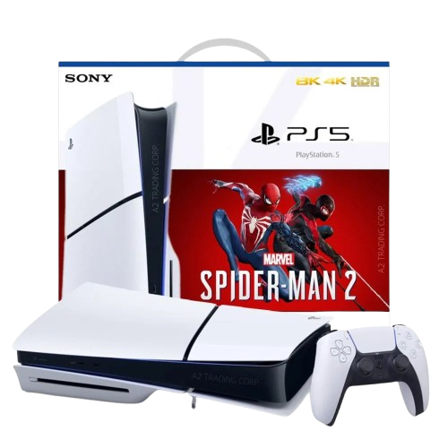

Consola PlayStation 5 Slim Lector De Disco Spiderman
$2.599.000
$3.499.000
-25%¡Lleva tu experiencia de juego al siguiente nivel con la nueva PlayStation 5 Slim 1TB Disco en Bliss Technology! Esta versión compacta del PS5, equipada con mayor capacidad de almacenamiento, te ofrece todo lo que necesitas para disfrutar de los mejores títulos y aprovechar al máximo las características de la consola de última generación.